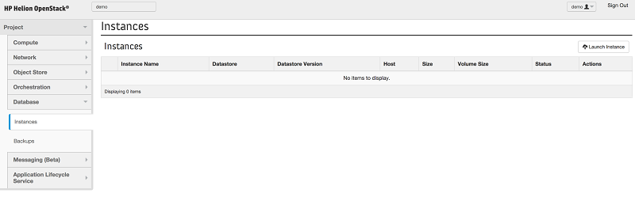
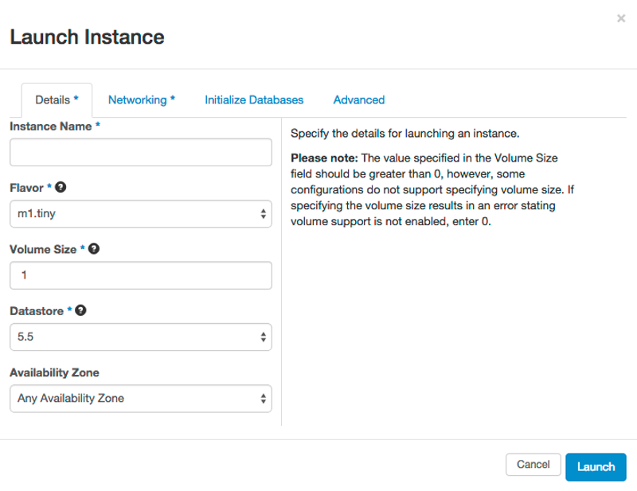
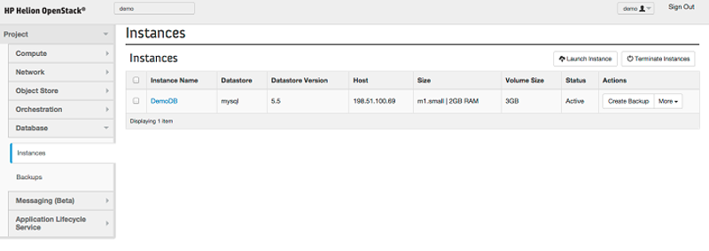
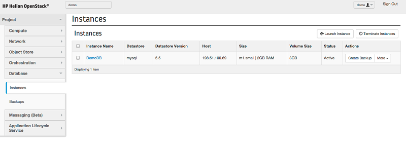
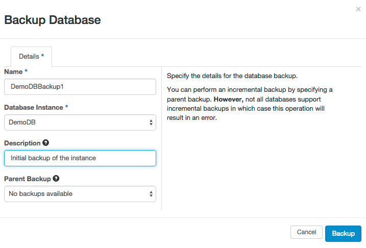
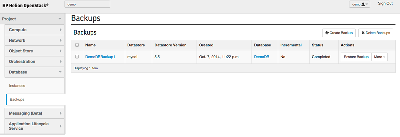
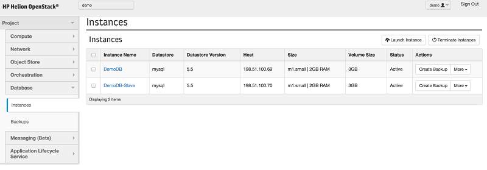
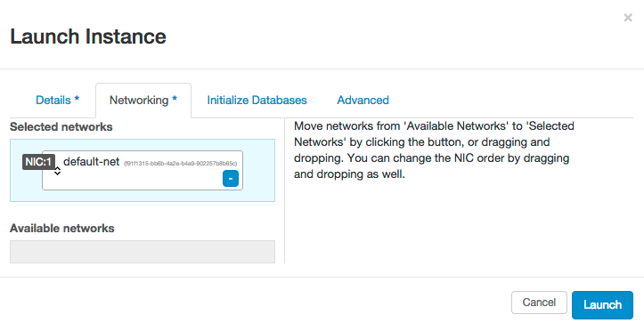

HP Helion Development Platform: Using the Database Service
The database service provides lifecycle services for MySQL database instances. Lifecycle services include provisioning, configuration, patching, backups, restores, and monitoring that can be administered from either a CLI interface, RESTful APIs or the Horizon dashboard.
These instances can then be utilized by your applications to provide standard datastore/back-end functionality.
The following topics explain how to create and manage a database:
Prerequisites
- Install the HP Helion Development Platform.
- Configure the database service.
Creating a Database Instance
Log into the Horizon console.
Under your project, open the Database panel and then click the Instances tab.
Click Launch Instance.
In the Details tab, specify the following options:
- Instance Name - the name of the MySQL instance to create
- Flavor - the size of the instance to host the database on
 - Volume Size - the size of the volume to host the data on (in GB). Note: this cannot be changed later.
- Datastore - the MySQL database version to create
- Availability Zone (optional) the availability zone that the database will be created in.
Under the Networking tab, specify the network to associate the database instance with. This is required and should be the same network that any application that accesses the database is on.

- Optional - Specify the initial database to create on the database instance. This option can be used to pre-populate the instance with a database and a user for that database.

- Click Launch.
- In the Database tab, open the Instances panel. This panel displays the status of the newly created database instance.
 - Once the database instance has reached Active status, the instance is ready to use.
Creating a Database Backup
The following section will demonstrate how to back up an existing database instance. This will take a backup of the entire database instance. If necessary, the backup can be restored to a new instance at a later time.
- Log in to the Horizon console.
- Under your project, open the Database panel and then click the Instances tab.
- A list of active database instances will be displayed. Identify the database instance to back up and click Create Backup next to that instance.
 - In the Backup Database dialog, specify the following information:
- Name - the name of the backup to create. This name will help you identify the backup in the future.
- Database Instance - The database instance that will be backed up.
- Description - a text description of the backup (optional).
- Parent Backup - if a previous backup of this database instance exists. it is possible to take an incremental backup. An incremental backup will process faster because it only stores the differences between the two. Select the previous backup if an incremental backup is desired.

- Click Backup.
- In the Database panel, click the Backups tab to view all existing backups, including the newly-created backup.

Replicating a Database
Replicating a database creates a slave for your instance that replicates every action on the master. Creating a database instance that is automatically replicated results in more durable data and can prevent data loss in a disaster scenario.
Prerequisites
To follow this guide, you must have already created a database instance that will be the master database.
Steps
- Log in to the Horizon console.
- Under your project, open the Database panel and then click the Instances tab.
 - Click Launch Instance.
- In the Details tab, specify the following options:
- Instance Name - the name of the MySQL instance that will be the slave instance.
- Flavor - the size of the instance to host the slave database on.
- Volume Size- the size of the volume to host the data on (in GB). Note: this cannot be changed later.
- Datastore - the MySQL datastore version to create.
- Availability Zone (optional) - the availability zone that the database will be created in. For replication, it is important for this to be in a different availability zone than the master.

- Under the Networking tab, specify the network to associate the database instance with. This is required and should be the same network that any application that accesses the database is on.
 - Click the Advanced tab and then use the Replicate from Instance drop-down to select the master instance to replicate.

- Click Launch to create the replica.

Attaching a Floating IP to the Database Instance
It is possible to attach a floating IP address to a database instance - this will make it possible to access your instance from outside of your cloud environment.
To create a database with a floating IP address follow these steps from the command line. Note the following instructions require that you use the Trove CLI to create a database instance.
For more information on using the Trove CLI, refer to the More Resources section at the end of this guide.
Pre-provision a port on the network that the instance will be attached to using the neutron CLI. Note down the port-id of the port created:
$ neutron port-create <network-id>When creating the trove instance pass in the port id as the nic parameter:
$ trove create <name> <flavor-id> --size <size> --nic port-id=<port-id>Create a Floating IP using neutron and attach it to the port provisioned in step 1:
$ neutron floatingip-create <floating-network> $ neutron floatingip-associate <floating-ip-id> <port-id>
More Resources
- More information on Trove.
- More information on using the Trove CLI to create a database instance.